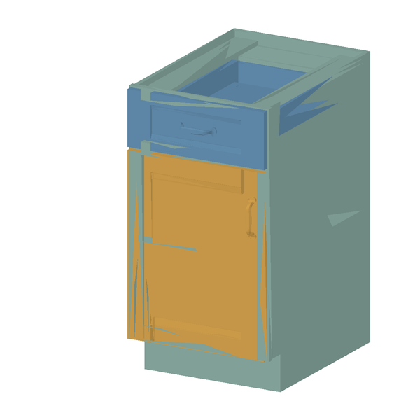
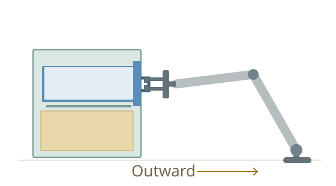

1. From instructions to robot actions
Suppose we ask a robot to open a drawer. It needs to understand the request, find the handle, and move its arm. These three kinds of model help explain those different abilities.

How do words turn into movement?
1.1 Text-only LLM: work with language
A text-only large language model (LLM) takes text and generates text. It cannot inspect an image directly; you need to describe it in words. It can explain a task or suggest steps to follow. Llama 2 is one example.
We ask: “How do you open a drawer?”
A possible answer: “Hold the handle and pull outward.”
That is a useful instruction, but this text-only exchange does not tell the robot where the handle is in front of it.
1.2 VLM: connect images and words
A vision-language model (VLM) can use an image together with text. It can answer questions about what it sees. For example, LLaVA connects an image encoder to a language model.
We provide: the cabinet picture and “Which handle belongs to the drawer?”
A possible answer: “The handle on the blue part at the top.”
Now the answer is tied to this cabinet. The robot still needs commands that move its arm and gripper.
1.3 VLA: produce robot actions
A vision-language-action model (VLA) uses visual information and an instruction to produce robot actions. Depending on the model, it may also use information about the robot’s current position.
The output can be numbers telling the gripper where to move and whether to open or close. A separate robot controller carries out those commands. The next camera image shows what actually happened.
Opening a drawer, step by step
In this example, the gripper is already holding the handle. The diagram illustrates one possible action, not a recorded prediction from a trained model.
-
1 Camera image + instruction

Drawer: 0 cm open
Gripper: holding the handleInstruction“Open the drawer.”
The image shows the current situation. The words give the task.
-
2 Inside the VLA
- Image encoder + adapter
Turn the image into numerical features the main model can use.
- Vision-language backbone
Combine those features with the instruction “Open the drawer.”
- Action output
Produce action values. Here, a possible result is an outward movement with the gripper kept closed.
- Image encoder + adapter
-
3 A possible command
- Move outward
- +0.10 m
- Gripper
- Keep closed
In words: “Move the gripper 10 cm outward while holding the handle.”
These are two readable fields for this one-direction example. A real robot’s command format can include more movement values.
-
4 Controller → movement → new image
The controller tries to execute the command. If the drawer slides freely and the grip holds, the drawer can follow the gripper outward.

Possible result: 10 cm open If the drawer is locked, it stays at 0 cm instead. The next camera image shows the actual result, so the next prediction can use that new information.
The new camera image goes back to step 1. The model can then choose another action.
What does “predict an action” mean?
A VLA is trained using examples that pair observations and instructions with robot actions. It learns patterns in those examples. When given a new image and instruction, it uses what it learned to produce the next action values.
For the same instruction, “Open the drawer,” different views can call for different commands:
| What the image shows | Example next command |
|---|---|
| The open gripper is positioned around the handle. | Move 0 cm; close the gripper to grasp it. |
| The gripper is already holding the handle. | Move 10 cm outward; keep closed. |
These are illustrative commands. Here, “predict” means propose the next action
The structure is simplified from OpenVLA, whose predicted outputs are decoded into numerical robot commands. Other VLAs can organize their action outputs differently.
1.4 What happens after the robot tries to pull?
Suppose the gripper is holding the handle. The VLA outputs a command: “Move the gripper 10 cm outward.” This is a requested movement. It does not guarantee that the drawer opens by 10 cm.
A freely sliding drawer may follow the gripper. A locked drawer stays shut. A heavy drawer or one with high friction may require more force than the controller can supply. The result depends on the robot, its controller, and the object.
A real robot finds out by interacting with the real cabinet. In simulation, we build a model of that interaction and calculate what happens.
- The VLA requests an action. For example, move the gripper outward while keeping it closed.
- The controller tries to make that movement. It turns the request into control inputs for the simulated robot.
- The simulation calculates the response. A physics engine computes how the robot and drawer move under the modeled forces, contacts, and joint limits.
- A renderer makes the next camera image. The VLA receives this updated view and can choose another action.
We can reset the same scene and repeat the task, then change just the drawer’s mass or friction to compare the results. This helps us test a robot’s behavior without rebuilding a physical experiment each time. Simulated experience can also be used for training; its usefulness depends on how well the simulated conditions represent the intended task.
What do we need to build that cabinet?
- A 3D shape
- The cabinet, drawer, and handle need geometry. This gives us something to render and helps define where contact can happen.
- Parts and joints
- The drawer must be a separate moving part, connected so it can slide but cannot move freely in every direction.
- Physical properties
- Mass, friction, and contact settings help determine how the object responds to a force.
The diagram above illustrates the command-and-feedback loop. Later, we will calculate the drawer’s movement from forces.
The next chapters follow that process: Chapter 2 introduces 3D representations and how to create them; Chapter 3 describes its parts and joints; Chapter 4 adds forces, simulated motion, and robot interaction.